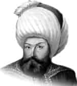

OSMAN GAZİ
Annesi : Hayme Hatun
Doğumu : Söğüt, 1258
Vefatı : Bursa, 1326
Saltanatı : 1299 - 1326 (27 yıl)
Osman Gazi, Ertuğrul Bey’in üç oğlundan birisidir. Osman Bey diğer kardeşlerinden büyük değildi, fakat adeta bir idareci olarak yaratılmıştı. Zira bu hususta çok büyük kabiliyet sahibi idi. Babası vefat ettikten sonra diğer bütün beyler, ittifakla Osman Bey’i aşiretin reisi olarak tanıdılar.
Osman Bey, beyliğin başına geçtiği zaman, yirmi üç yaşında idi. Uzun boylu, geniş göğüslü, kalın ve çatık kaşlı, elâ gözlü ve koç burunlu idi. İki omuzları arası oldukça geniş, vücudunun belden yukarı kısmı, aşağı kısmına nispetle daha uzundu. Çehresi yuvarlak ve teni buğday renginde idi. Büyük şeyhlerden Edebali’nin evinde misafir iken, istirahat için gösterilen odada, Kur’an-ı Kerim’i görünce, sabaha kadar saygısından yatmadığı ve geceyi uykusuz geçirdiği çok meşhurdur. Şeyh bu durumdan çok memnun kaldığı için kendisini kızı ile evlendirmiş ve hayır duaları etmiştir.
Osman Bey, 1287’de Karacahisar’ı fethetti. 1280’de Domaniç’te Bizanslıları yenerek Bilecik’i fethetti ve Selçuklu Hükümdarı tarafından uç beyliğine verildi. 1299’da İnegöl fethedildi. Selçuklu Devleti yıkıldı ve Osman Bey müstakil beyliğini ilân etti. 1300’de Yenişehir ile Köprühisar, 1302’de ise Akhisar ve Koçhisar fethedildi. Osman Bey’e babasından kalan arazinin genişliği 4800 km2 idi. Kendisi vefat ettiğinde ise, beyliğin toprak genişliği 16.000 km2’ye ulaşmıştır.
Vefat etmeden önce oğlu Orhan Bey’e şöyle vasiyet etmiştir: “Oğullarıma ve bütün dostlarıma I. vasiyetim şudur ki; her zaman gazaya devam ederek, Din-i Celil-i İslâm’ın yüceliğini yaşatınız. Cihadın kemaline ererek, sancağı şerifi hep yüksekte tutunuz. Her zaman İslâm’a hizmet ediniz. Zira Cenâb-ı Hak benim gibi zayıf bir kulunu ülkeler fethetmek için memur etti. Gaza ve cihatlarınızla Kelime-i Tevhid’i çok uzaklara götürünüz. Hanedanımdan her kim, hak yoldan ve adaletten saparsa mahşer gününde, Resûlü Azam’ın şefaatinden mahrum kalsın. Oğlum! Dünyaya gelen hiçbir insan yoktur ki, ölüme boyun eğmesin. Bana da, Hz. Allah’ın emri ile şimdi ölüm yaklaştı. Bu devleti sana emanet ediyorum. Seni de Mevlâ’ya emanet ettim. Her işinde adaleti üstün tut.”
Vefatında altmış sekiz yaşında idi. Tarih ise, Ağustos 1326’yı gösteriyordu.
Vefat ettiğinde geriye bıraktığı mal varlığı şunlardı: Bir at zırhı, bir çift çizme, birkaç tane sancak, bir kılıç, bir mızrak, bir tirkeş, birkaç at, üç sürü koyun, tuzluk ve kaşıklık.
Osman Bey vefat ettiği zaman zayıf bir rivayete göre, Söğüt’te babasının yanına defnedilmiş ve Bursa alınırsa oraya defnini vasiyet etmişti. Bunun için 1326’da Bursa alındıktan sonra vasiyeti yerine getirilerek cesedi Bursa’ya nakledilip, Hisar’da (Saint Eli) namına yapılmış olan Gümüşlü Kümbet’e defnedilmiştir. Fakat vekayün tetkikine göre vefatının 1326’da Bursa’nın teslim alınmasından sonra olduğu anlaşılıyor.
Erkek çocukları: Pazarlı Boy, Çoban Bey, Hamid Bey, Orhan Bey, Alâeddin Ali Bey, Melik Bey, Savcı Bey.
Kız çocukları: Fatma.